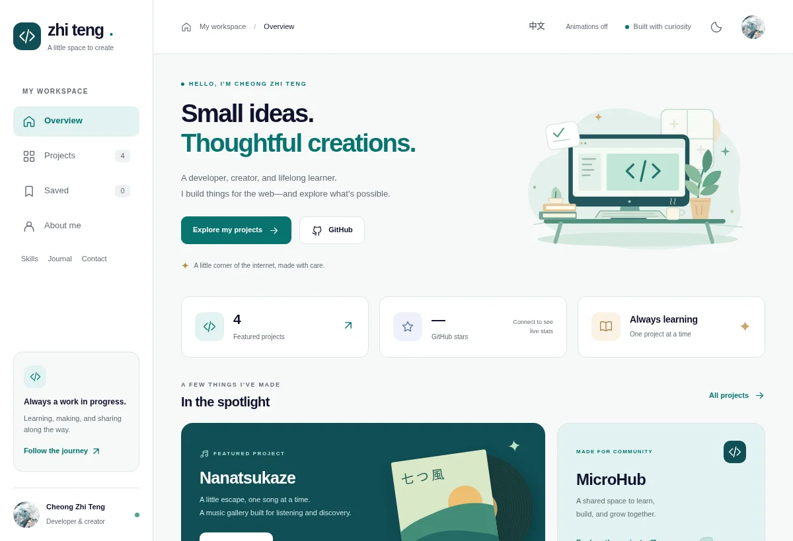

PROJECT NOTES
In developmentMy workspace
A personal portfolio built around useful project discovery and the Modern Campus design language.
A closer look
Open in new tab
The preview loads only when requested. If the host blocks embedding or playback, use Open in new tab.

What it does
- Search, language and status filters, bookmarks, and shareable URLs.
- English and Chinese, persistent preferences, and light/dark themes.
- Cached repository data, optimized local images, and automated browser checks.
Built with
Project status
This redesign is being developed locally. Publication is a separate deployment step.
LESSONS FROM THE IMPLEMENTATION
Engineering notes
A network request should enhance a useful page. Cached and curated content keep project discovery available when the API fails.
Search state belongs in the URL when visitors need to share or restore the same collection.
Notes are based on the project source and documentation. Read the source